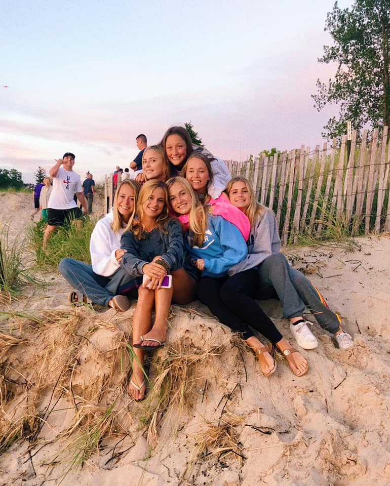
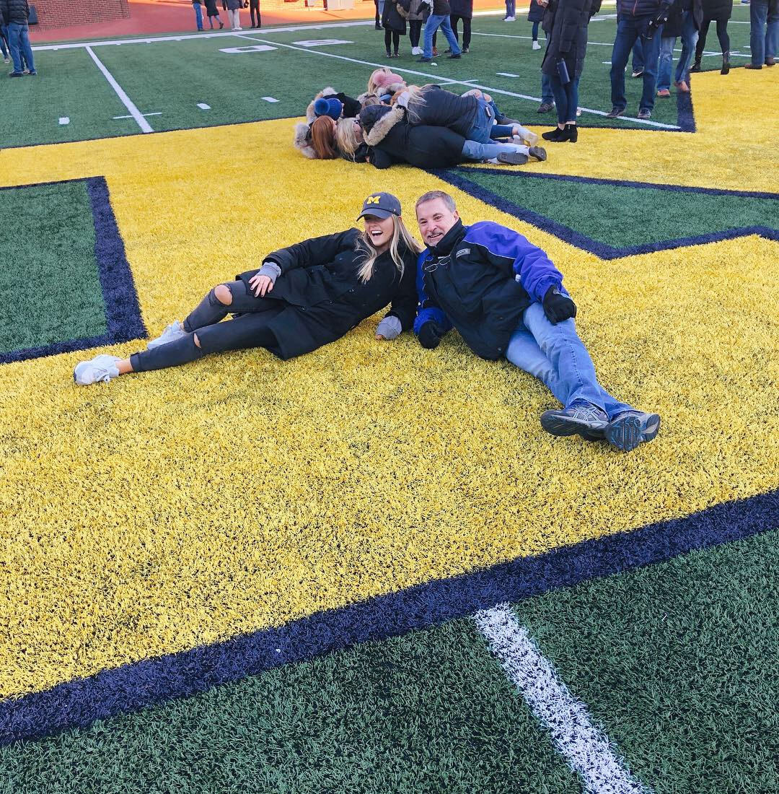
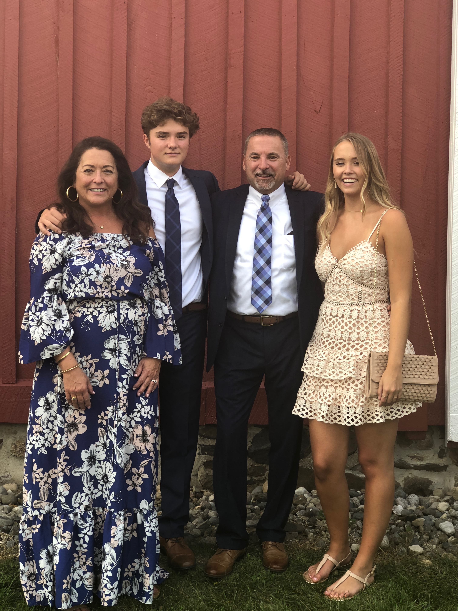
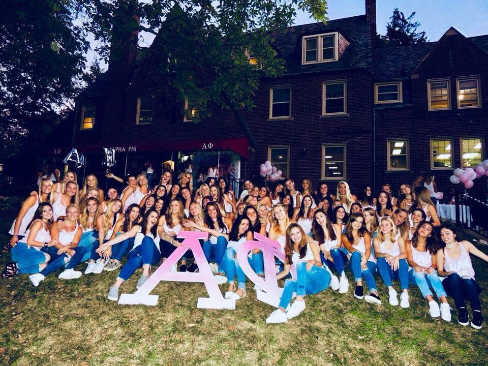

I grew up in a small, Northern Michigan town and graduated with 28 classmates. Growing up in such a small community I was more than ready to come to the University of Michigan, where people come from all over the world. Being in my third year I am excited to study abroad in Madrid, Spain second semester. I enjoy learning Spanish and travelling and Madrid is the perfect place to be for this! Growing up on Lake Michigan some of my favorite pastimes include being on the water, hiking, and watching the sunset. I also love having a close group of friends and hanging out with my family any chance I get.
I am a Junior in the Information program at the University of Michigan, focusing in social media design and analysis. The program is a mix between computer science and business, focusing on understanding people first and technology second. Some things I am learning in my classes right now include: Python, CSS, HTML, case study analysis and business communication basics. My unique education feeds my growing passion for marketing as I am interested in both the art and science behind engaging with audiences across different channels. This past summer, I was a guest services and sales intern at a local resort, working to enhance the resort’s brand image through communications and public relations. I communicated with guests face-to-face while actively maintaining correspondence between 11 different departments. I aspire to work for a company that will allow me to utilize my communication skills, to create and develop digital products and experiences that are transformative for users.
   